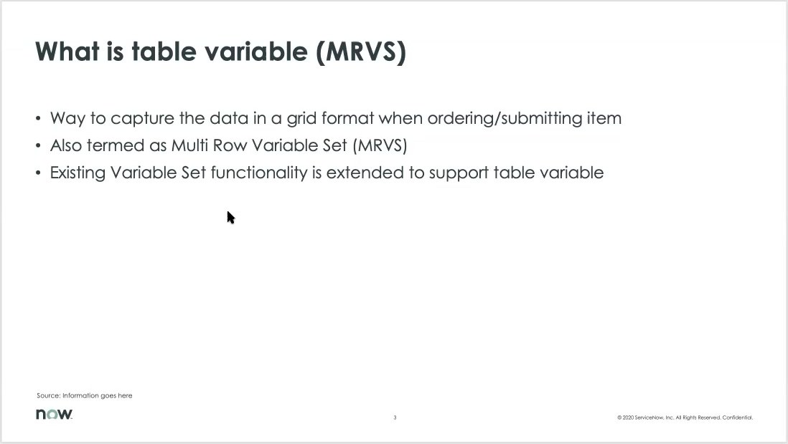
Concept
Understand what MRVS solves
A table variable captures repeated structured input in a grid while ordering/submitting an item.
Learn how ServiceNow MRVS works end to end: what it is, how to configure it, how users add rows, where values are stored, and how it renders across Platform, Portal, and Workspace.
Learning path
The easiest mental model is: MRVS = variable set as a table. Child variables become columns, each added row becomes a grouped set of answers.

A table variable captures repeated structured input in a grid while ordering/submitting an item.
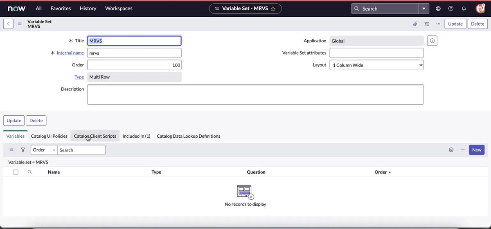
Create a Variable Set with Type = Multi Row, give it an internal name, order, and layout.
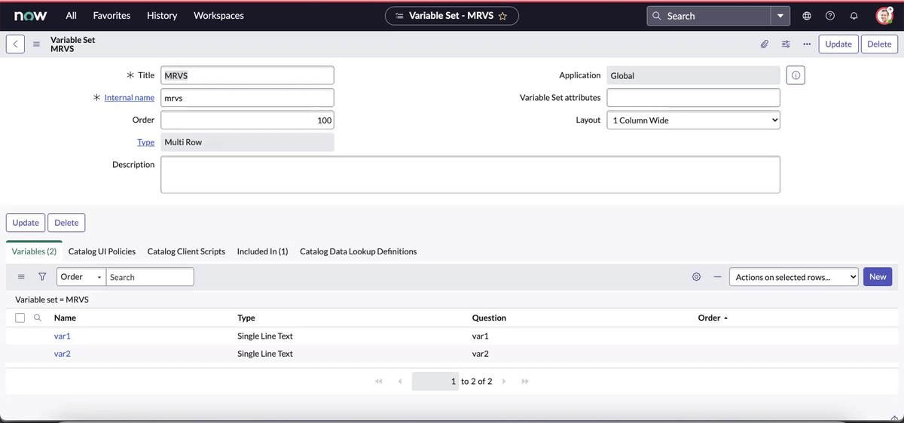
Each child variable becomes a column/question in the grid.
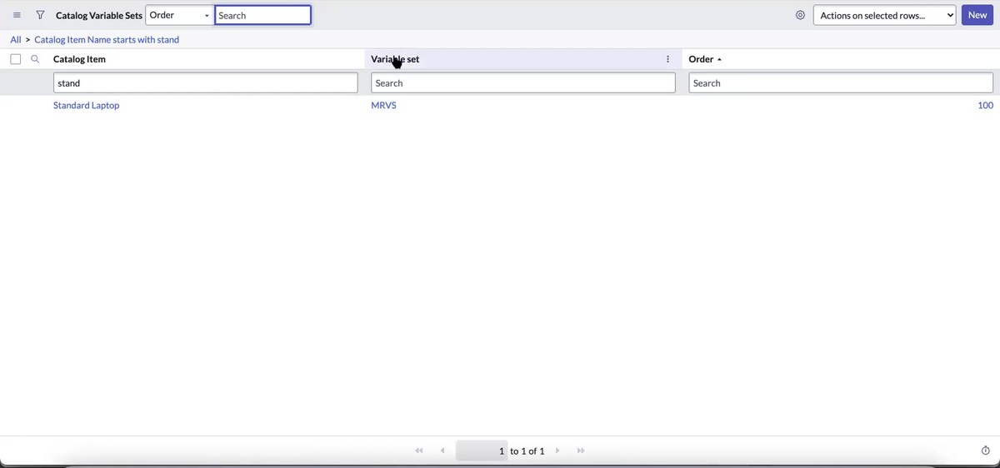
The Catalog Variable Sets relationship makes the MRVS appear on the item.
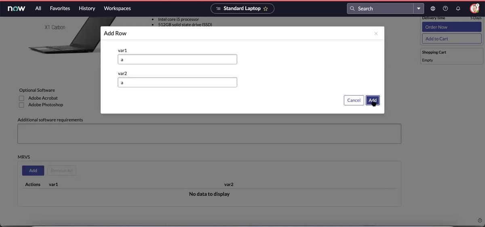
The ordering UI opens an Add Row dialog where each column is entered for one row.
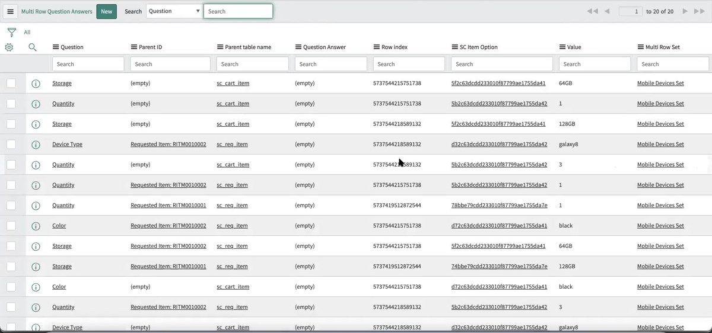
ServiceNow stores each cell as a question answer, grouped by row index and parent record.
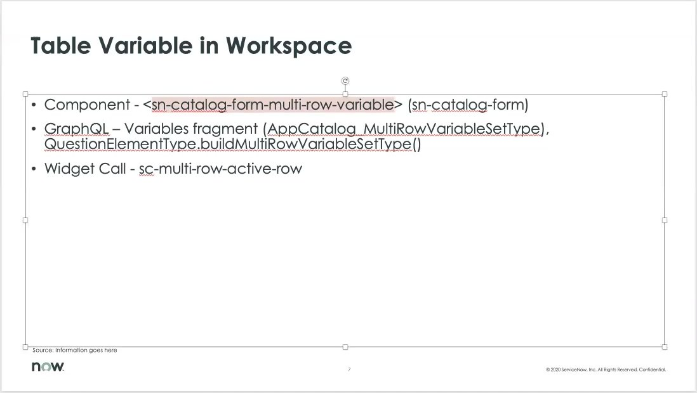
Rendering differs by UI surface, but the concept remains the same.
Concept
A table variable is ServiceNow’s way to collect repeating, row-based information while a user orders or submits a catalog item. It is also called a Multi Row Variable Set.
Hands-on configuration
In the demo, the first item is Standard Laptop. The presenter goes to the related lists and opens the Variable Sets tab.
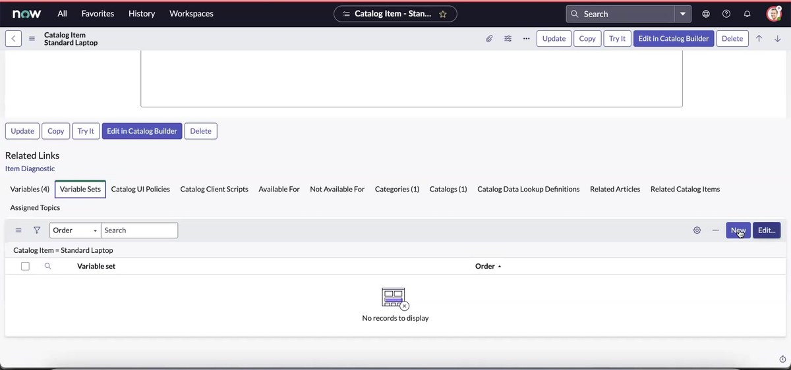
Important fields from the demo:
| Field | Demo value | Why it matters |
|---|---|---|
| Title | MRVS | Display name of the variable set. |
| Internal name | mrvs | Stable name used internally. |
| Order | 100 | Controls display order on the catalog item. |
| Type | Multi Row | This is what makes the variable set behave like a table/grid. |
| Layout | 1 Column Wide | Layout for how fields are displayed in the row dialog. |
The child variables become the grid columns. The demo creates var1 and var2 as Single Line Text variables, then later shows a realistic Mobile Devices Set with Device Type, Storage, Color, and Quantity.
The relationship record connects a catalog item and a variable set. In the demo, Standard Laptop is linked to MRVS with order 100.
End-user behavior
In the order form, the MRVS is rendered as a table with an Add action. Clicking Add opens a modal. The modal contains the child variables for one row.
After the user adds a row, the row appears in the grid. Users can add multiple rows, edit rows, or remove rows depending on UI behavior and permissions.
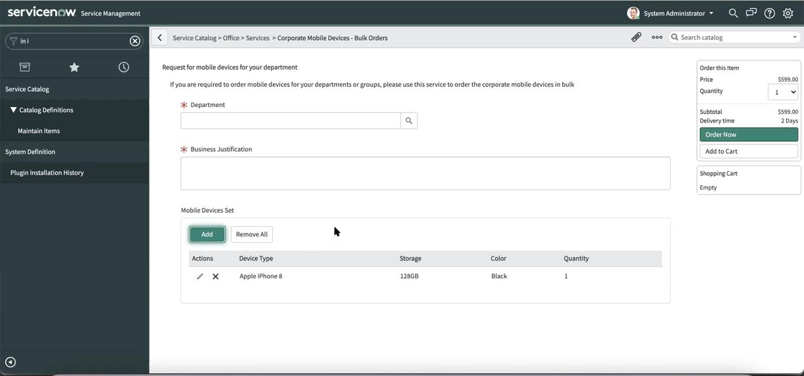
Realistic example
The second example is easier to remember because it uses a real business scenario:
Persistence model
The demo opens the Multi Row Question Answers list to show how row data is persisted. Think of each table cell as an answer record, and the row index ties multiple answers together into one row.
MRVS row
├── Device Type = Apple iPhone 8
├── Storage = 64GB
├── Color = Black
└── Quantity = 1
Implementation architecture
The demo separates implementation details into Platform, Portal, and Workspace.
window.tableVariableCachequestion_table.xml, question_table_variable_template.xml, question_table_variable_row.xmlTableVariableService.js, TableVariable.js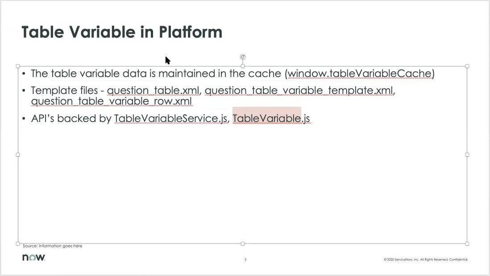
sp_form_field.xml, sp_element_sc_multi_row.xmlsc-multi-row-active-rowspScMultiRowElement.js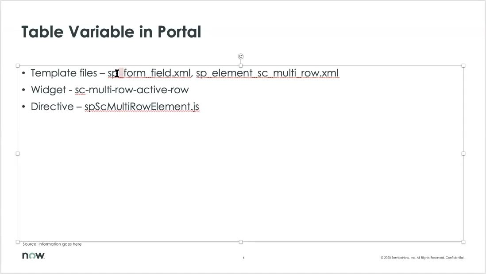
<sn-catalog-form-multi-row-variable>AppCatalog_MultiRowVariableSetTypeQuestionElementType.buildMultiRowVariableSetType()sc-multi-row-active-rowDeveloper walkthrough
The code walkthrough shows the directive controlling row display, clearing values, and opening the active-row modal.
refreshMultiRowDisplayValue() refreshes the display value for the MRVS.clearAllValue() clears the full grid value and sends a confirmation/status message.clearValue() asks for confirmation and removes all rows.createRow() opens the Add Row flow using active-row widget data.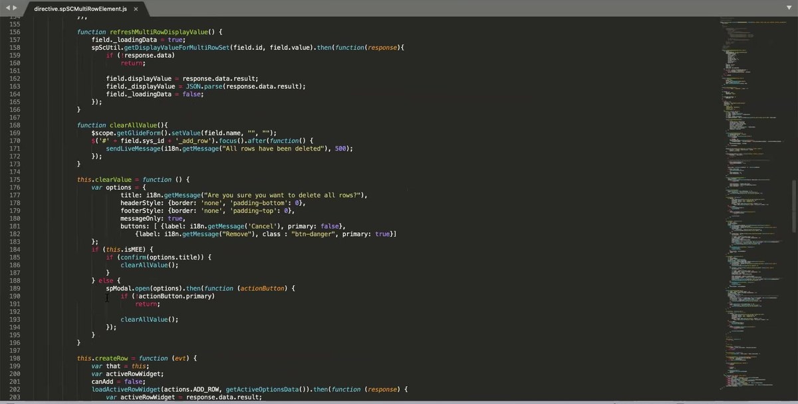
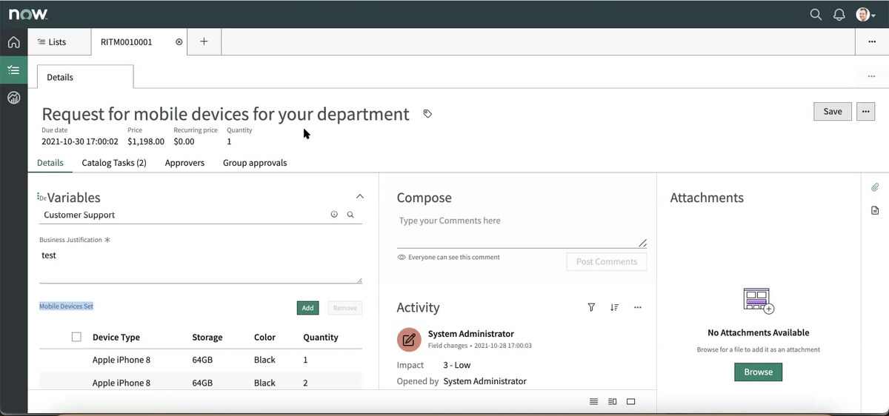
Workspace
In Workspace, the requested item form displays the Variables section and renders the MRVS grid. The demo shows submitted rows with values such as Apple iPhone 8, 64GB, Black, and quantity values.
Practice
Self-check
Its Type is set to Multi Row.
They become the columns/questions shown in the Add Row modal and grid.
By the row index in the Multi Row Question Answers data.
They use different rendering components/templates/directives even though the catalog concept is the same.